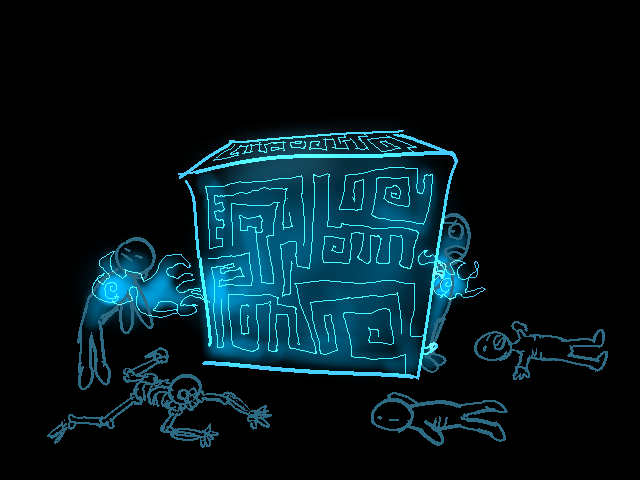
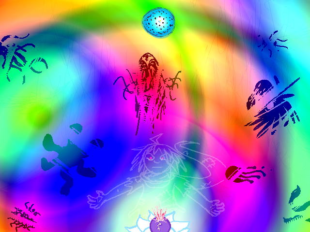

What is a voidco dungeon?
A voidco dungeon, in short, is a dungeon created by Voidco.
Voidco is an "Energy company" based in the furthest ring, though it seems more like an excuse just to make their victims suffer. The supposed purpose of voidco dungeons is to extract energy from the living and the dead alike, to be sold back at a premium or something like that.
Every voidco dungeon requires a dungeon core to function to the company's needs, and it is that device that sucks the life energy out of anything and anyone within a certain radius. Dungeon Cores have also been known to drain spirit energy as well, making them a danger even to the dead. (how in the heck you you design something that evil? no offense meant towards the architect but holy fuck)
Average mortals can likely only last about a week in a voidco dungeon, while godtiers can technically last indefinitely, but will feel like crap for a long time. It goes without saying that you'll probably get a Heroic Judgement if you raid a voidco dungeon (with intent to stop its energy sucking) and die in battle or something, though I imagine there's particulars and edge cases that can be sorted through, such as an unclimactic death, being morally gray, and other ways to weasel out of the clock's swing.
It is highly advised that one not enter a voidco dungeon alone, as its not only easy to be overwhelmed alone, but your energy will likely drain faster too.
Voidco dungeons can take any variety of shapes, as long as the core is somewhere in it. The dungeons have been known to be in caves, community center buildings, mystery dungeons, pirate ships, ancient temples, underground cities designed to withstand the apocolypse, and many many other forms.
They usually crop up in inhabited locations, though their effects often drive most out of the area. There is said to be at least 1 voidco dungeon on each life-supporting planet in the Gene universe, or so I've been told.
The dungeons are often stocked with plenty of traps, puzzles, and monsters. The puzzles range from easy to broken if you don't cheese them. The traps could be pretty much anything. The monsters are more often than not, voidco employees, usually left for dead to be slaughtered by whatever murderhoboes find the dungeon.
Thankfully, our group has been trying to keep things pacifist, for the most part. Most voidco employees can eventually be reasoned with, given enough diplomacy.
Dungeon cores are made of an incredibly hard material, that require extremely powerful explosives, or something impossibly powerful to destroy. Hacking them tends to be quite difficult. They are not immune to a blast from an unshielded stargate, thankfully. One time Katie tried to overload one with her Big Ultimate Self Energy, but it did not do well, and some of her internal splinters apparently got wrecked from that. Its assumed that voidco upgraded the capacity on the cores since then, so don't try to do that.
Voidco dungeons are said to have been built during the events of the Grand Dream, an incident where an Absolutely Mad heart player with the power of Anime made a dreambubble get way too huge and covered the entire universe, allowing voidco to use dream logic to infiltrate and start building. Its assumed that Voidco made these dungeons out of spite, after a time player with a god complex lazored half the furthest ring.